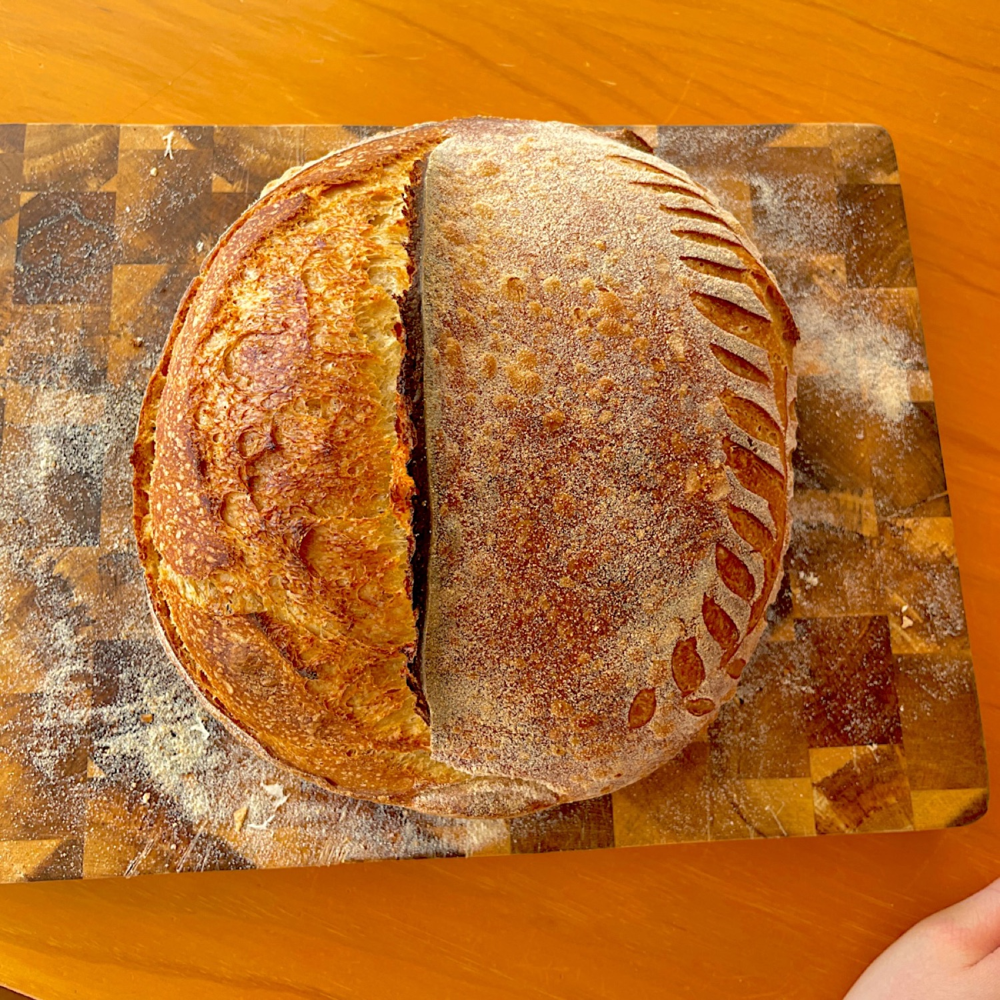

Blog / 4. November 2026
Ein Sauerteig-Zeitplan für einen Arbeitstag

Du kannst Sauerteigbrot backen und deinen Job behalten. Es geht, wenn zwei Dinge ohne dich passieren: Der Starter geht auf, während du in der Arbeit bist, und der Teigling reift im Kühlschrank, während du schläfst. Um 7:30 füttern, um 18:15 mischen, bis 23:15 formen, am nächsten Tag backen.
Die Zeiten unten gelten für eine Küche mit 22 °C und einen Starter, der nach einer 1:1:1-Fütterung in vier Stunden am Höhepunkt ist. Bei dir wird es anders sein, natürlich wird es das. Wie du die Zeiten verschiebst, steht im letzten Abschnitt.
Der Zeitplan
| Wann | Was | Dauer |
|---|---|---|
| 7:30 | Starter 1:7:7 füttern | 10 Std. 35 bis zum Höhepunkt |
| 18:15 | Mehl und Wasser mischen, stehen lassen | 30 Min. |
| 18:45 | Starter und Salz dazu. Hier beginnt die Stockgare | 4 Std. |
| 19:15 bis 20:45 | Viermal Dehnen und Falten, alle halbe Stunde | während der Stockgare |
| 22:45 | Vorformen, dann ruhen lassen | 30 Min. |
| 23:15 | Formen, ins Gärkörbchen, in den Kühlschrank | 10 Min. |
| Am nächsten Tag | Ofen aufheizen, direkt aus dem Kühlschrank backen | 30 Min. + 45 Min. |
Ja, 23:15 ist spät. Die Regeln hat der Teig gemacht. Ich habe sie nur aufgeschrieben.
Warum in der Früh 1:7:7
Eine 1:1:1-Fütterung ist nach etwa vier Stunden am Höhepunkt. Um 7:30 gefüttert, ist der Starter um 11:30 am besten, während du in einem Meeting sitzt, und längst darüber hinaus, wenn du heimkommst.
Mehr Futter pro Gramm Starter dauert länger. Ein Teil Starter auf sieben Teile Mehl und sieben Teile Wasser braucht bei 22 °C rund zehneinhalb Stunden, also bis etwa sechs am Abend. Für ein Brot sind das 10 g Starter, 70 g Mehl und 70 g Wasser: 150 g, davon kommen 100 g in den Teig und der Rest zurück ins Glas.
Die anderen Verhältnisse und ihre Zeiten stehen unter Welches Fütterungsverhältnis?, und der Starter-Rechner rechnet es für dein eigenes Glas.
Der Abend
Die Stockgare ist eine einzige Uhr. Sie beginnt, wenn der Starter in den Teig kommt, und endet beim Vorformen. Das Dehnen und Falten passiert mittendrin. Bei 22 °C und 100 g Starter auf 500 g Mehl dauert sie etwa vier Stunden. Ein Teig, der um 18:45 seinen Starter bekommt, ist also gegen 22:45 so weit.
Nach dem vierten Falten um 20:45 braucht dich der Teig zwei Stunden lang nicht. Iss etwas. Schau etwas. Stups ihn nicht an.
Der Teig zählt mehr als die Uhr. Er soll um etwa die Hälfte gewachsen sein, sich luftig anfühlen und wackeln, wenn du die Schüssel rüttelst. Wenn nicht, gib ihm noch eine halbe Stunde. Der Teig hat noch kein einziges Mal auf die Uhr geschaut.
Der nächste Tag
Der Kühlschrank macht das Ganze erst möglich. Ein geformter Teigling hält dort zwischen acht Stunden und einem Tag und kommt kalt in den Ofen.
- Vor der Arbeit: Ofen um 6:30 einschalten, Brot um 7:00 hinein, um 7:45 heraus. Das sind knapp acht Stunden im Kühlschrank, eher kurz, aber es geht. Außerdem riechst du im Morgenmeeting nach frischem Brot, was ich für einen Vorteil halte.
- Nach der Arbeit: Ofen um 18:00 einschalten, Brot um 18:30 hinein. Neunzehn Stunden im Kühlschrank geben ein säuerlicheres Brot. Viel länger als einen Tag sollte es nicht werden.
Wenn deine Küche nicht 22 °C hat
Die Temperatur verschiebt alles. Zehn Grad verdoppeln ungefähr das Tempo: Eine Stockgare von vier Stunden bei 22 °C dauert bei 26 °C rund drei und bei 16 °C eher sechs. Für den Starter gilt dasselbe.
- Warme Küche: in der Früh 1:10:10 füttern, damit der Starter am Abend nicht schon über dem Höhepunkt ist, und mit früherem Formen rechnen.
- Kühle Küche: 1:5:5 füttern und den Teig an einen warmen Platz stellen, etwa in den Ofen, in dem nur das Licht brennt. Sonst wird der Abend sehr lang. Länger als 23:15, meine ich.
- Später daheim als um sechs: Ein Starter knapp nach dem Höhepunkt treibt das Brot trotzdem. Eine Stunde Verspätung ist kein Grund, das Backen abzusagen.
Die App rechnet für dich
Das alles ist Rückwärtsrechnen, und genau das Rückwärtsrechnen im Kopf hatte ich irgendwann satt. In Sourdough Diary sagst du, wann du Brot willst. Der Planer rechnet von dort rückwärts, mit den Zeiten deines eigenen Starters und der Temperatur deiner Küche, sagt dir, wann du fütterst und wie viel Gramm du abwiegst, und läutet bei jedem Schritt.